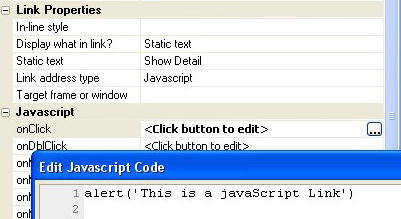
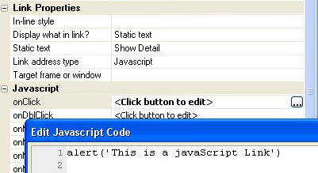

Link control
You can now specify that the link address type is 'Javascript'. Any Javascript function call or command can be added to the 'on
|  |
|
JavaScript link with on |
You can now specify that the link address type is 'Javascript'. Any Javascript function call or command can be added to the 'on
|  |
|
JavaScript link with on |